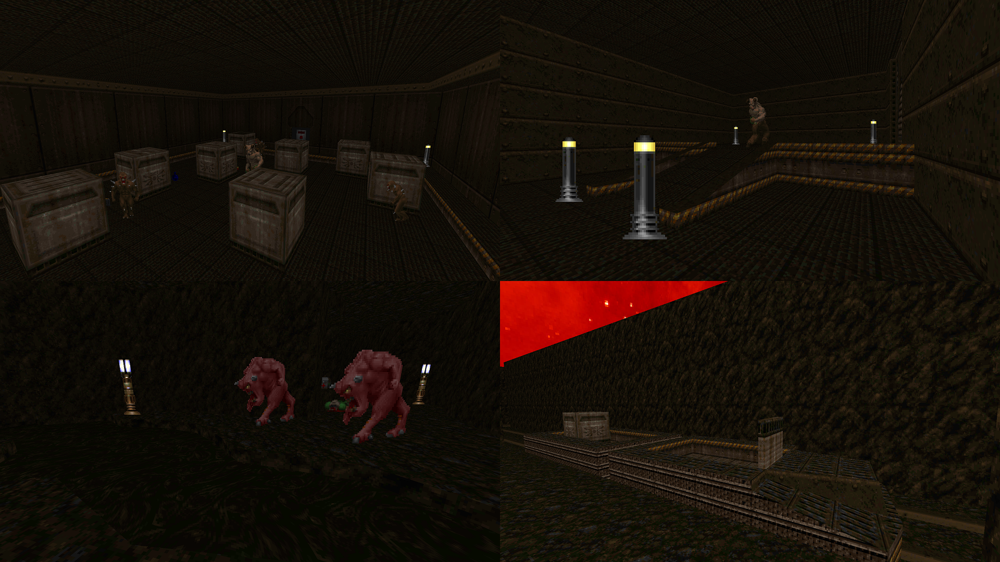

DOWNLOAD LINKS



| Year | 2013 |
| IWAD | doom2.wad |
| Source port | GZDoom |
| Game mode(s) | Single-player |
| Map(s) | E1M1-M2, E2M1-M2, E3M1-M2 |
Don’t let the Doom 1-esque map numbering fool you – Bleeding Skies is, in fact, an episodic wad for Doom 2. You play as Flynn Carmack, humanity’s last hope against an alien invasion. Why aliens instead of demons even though they’re quite clearly the latter, I don’t know.
This was my first Doom wad to use custom textures, as well as the first mapset I created for GZDoom. Dynamic lights are used frequently throughout these levels. Speaking of the levels, they’re short and mostly linear with fairly little detailing.